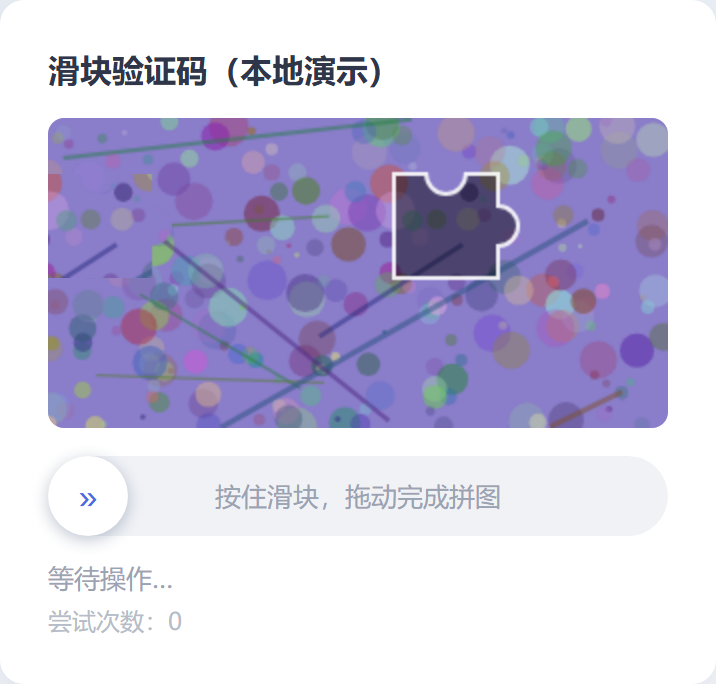

实拍截图
几何验证码求解 demo 实拍
它解决什么
验证码求解的难处不在于解出某一个,而在于可信地知道「解得有多好、失败在哪」。没有逐例可复现的评测,所有优化都是盲改。
怎么做的
slider_captcha 是求解库(OpenCV 缺口定位 + 拟人轨迹 + 可插拔页面驱动,可被宿主程序直接嵌入);geo_captcha 是统一评测框架:滑块/点选/旋转/空间推理四题型三件套解耦,合成数据逐例种子可复现。
关键数字
100%
滑块通过率
200/200,误差 0.285px
91.0%
点选语序全对率
n=200
98.0%
旋转 ±3° 通过率
MAE 1.14°
97.0%
空间完全还原率
n=200
功能
- 逐例可复现 —— 合成数据带种子,任何一次成绩都能原样复现。
- 三件套解耦 —— 数据生成、求解器、评测相互独立,可单独替换。
- 可嵌入求解库 —— 12-Token领取助手 直接嵌入 slider_captcha.find_gap。
- 可插拔页面驱动 —— 换目标站点不用改求解逻辑。
- 失败案例留档 —— 逐例数据与失败案例图在 runs/,可事后分析失败模式。
工程细节
正式成绩单由 python -m geo_captcha run --types slider,click,rotation,spatial --n 200 --seed 20261003 产出。
滑块定位误差均值 0.285px,验收线是 ≤0.5px —— 复现并超越了原基线(原独立 demo:100%、0.456px)。
点选失败模式:漏识 11(低置信主动放弃)、点错位置 7;旋转失败 4 例为歧义图案,margin 可事前识别;空间失败 6 例为低纹理场景。
仅供学习研究,以及对与你拥有或已获授权测试的系统使用。